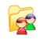

Users - from Settings pageBlacksmith Applications, www.blacksmithapps.com
The Users section incorporates two key FORGESM concepts: user profiles, and user positions.
User positions indicate the user's relationship to other users of the system in a hierarchy, based on your organization (for example, your organization might include positions like Headquarters, Region Manager, Broker, and so on). This is very handy when an employee moves into and/or out of positions, because rather than having to recreate positions every time you experience a personnel change, you simply change the assignment of users to the already-established positions.
Nearly everything in FORGESM is designed to take advantage of the concept of user positions: by assigning a user to a position, the user instantly sees any programs, projects, billbacks, etc. that are associated with that position.
User profiles indicate a user's permissions irrespective of the user's relationship to other users in the hierarchy (i.e., without regard to the user's user position). For example, you might create user profiles with authority (permission) to approve different quantities of different product; with different permissions for viewing and creating programs, etc.
When you add a new user, you select a user position and a user profile for the user, to establish that user's position within the hierarchy, as well as that user's permissions within the application. A user can have multiple positions (and must have one primary position), but can have only one profile. Setting up the user positions and profiles, and assigning the appropriate positions and profiles as you add users, gives you the ability to completely control who sees what, and who has the power to view, change, create and affect programs and other users and aspects of the system. And, as stated above, you can easily create and change who has access to what by creating and/or reassigning users to positions and profiles.
Add users is where you create a new user and enter their phone, email, fax and address information, as well as where you select the appropriate user position and user profile for the individual. If you use business segments, type or class codes or some other optional business category, this is where you select which one this person belongs to.
List users displays a full listing of all users in your system. The First Name, Last Name, Profile and Position can be used as sort columns by clicking the column headers. You can delete a user by clicking the "x" in the right column next to the user row.
unlock user -
If a user has unsuccessfully attempted to log in more times than is allowed according the settings in Users - login attempts, their account will be locked. When a user's account is locked, they cannot log in even if they enter the correct user name and password. In order for them to log in again, an administrator must unlock the user with this unlock user function.
When you click [unlock user], a list of any locked users displays. To unlock a user, simply click on the [unlock this user] link next to the user's name. The user will receive an email with a new password, and they can change the password the next time they log in.
login attempts -
Use this link to view and change the number of login attempts that should be permitted before locking out a user (see unlock user, above). The limit is 10, for security reasons.
User profiles is where you create permissions profiles that can then be assigned to a user. The permissions relate to the user's ability to approve, view and create program-related information.
You can create approval groups to represent different levels of approval. Products can be assigned to each approval group, within user profiles, approval methods (click the approval group to work with product assignments to groups).
user positions -
User positions should reflect your organization's hierarchy (as described above). Once you have user positions, you can associate them with users when you add a new user or edit an existing user (list users). It is within the add user/list user function that you can select the appropriate user position and user profile for a user.
authority sequence -
If you use authority sequence, you can add the authority categories on the right side of the page (Add Authority Sequence) and give each an order number. You can [add] new authority records, [change order] of existing records, and delete records. If you use authority sequence, your entries display for selection when adding or editing a user (the field Authority Sequence displays at the top of the user page, just above the user profile field). The authority sequence settings can be used for the escalation of approvals through your hierarchy, without going into the sales hierarchy.
The [traffic info] link shows who has accessed the application, the date and time they accessed it, and the IP address of the machine. Any unsuccessful attempts are also listed.
Select a date range for which to show traffic information. If you don't select any dates, the report runs for the previous to current day.
You can report on "All" users, or you can select a user from the drop-down.
The report defaults to include both successful and unsuccessful logins: you can restrict the report to either.
Select whether to sort the report by date or user.